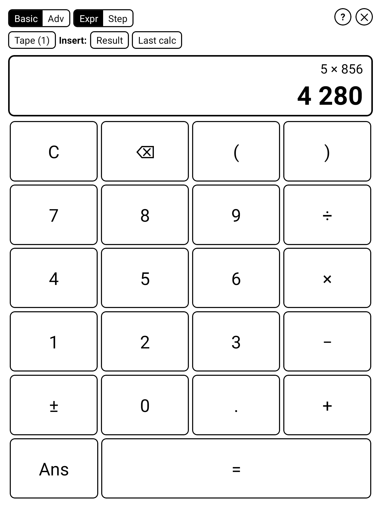
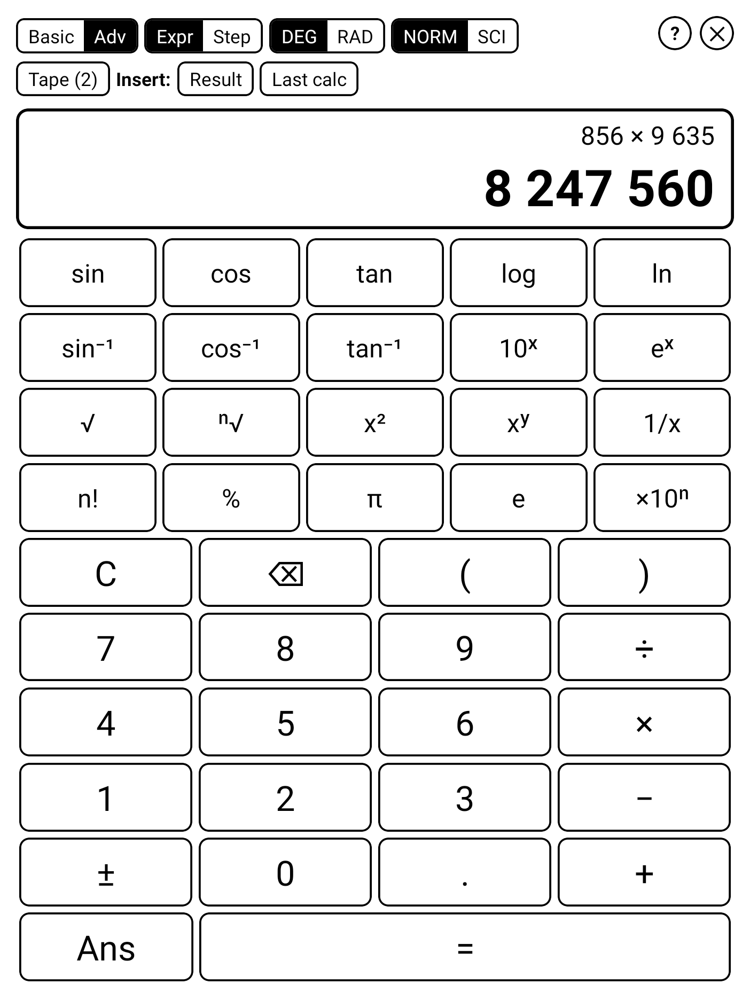
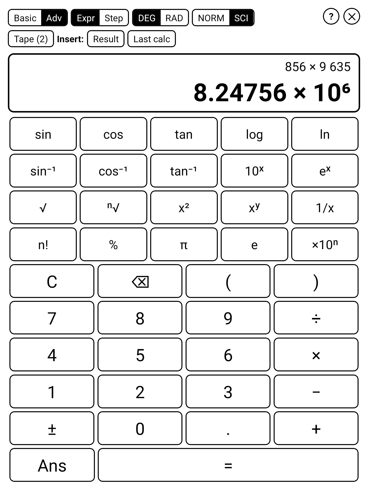
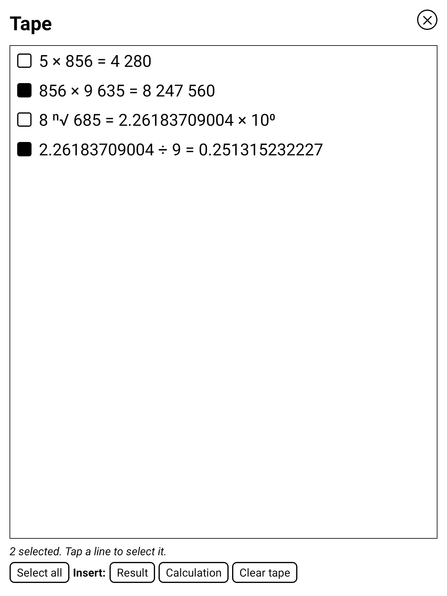
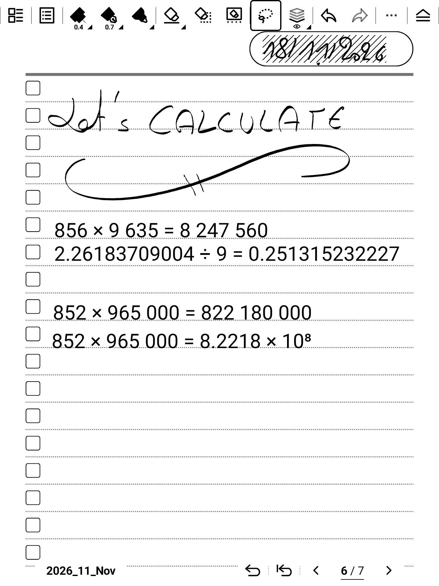

SNCalculator
A calculator for your Supernote, right inside your notes.
While I do math exercises with my daughter on my Nomad, we sometimes need a calculator to check our answers. So I built one, with the help of Claude.
Free and open source. So far only tested on a Supernote Nomad (A6X2).
Screenshots





What it does
- Opens from the toolbar in a note or a document, full screen, and closes with the ✕.
- A Basic keypad, and an Adv keypad with sin, cos and tan and their inverses, log, ln, roots, powers, factorial, π, e and scientific notation.
- Two ways to calculate. Expr: type the whole expression, with the usual precedence and parentheses. Step: like a pocket calculator, left to right, so 2 + 3 × 4 gives 20.
- Square roots stay exact when possible: √50 shows as 5√2, with the decimal value underneath.
- Degrees or radians, and normal or scientific display.
- Thousands are grouped with a space, and the decimal sign follows your device language.
- Every result goes on a tape. Select lines there and insert only their results, or the full calculations.
- Inserted text is an ordinary text box in the middle of the page: move it with the lasso or edit it.
- A help screen behind the ? button explains every key.
Install
- Download
SNCalculator.snplgwith the button above. - Connect your Supernote by USB and copy the file to the
MyStylefolder. - On the device, go to Settings → Apps → Plugins → Add Plugin, pick the file and install it.
- Open a note or a document: the calculator icon is now in the toolbar.
The first time you insert something, the device asks permission to change the note. Allow it to go on.
Good to know
- Inserting only works in notes. PDFs and other documents don't accept text boxes from plugins, so there it is a calculator only.
- So far it is only tested on a Supernote Nomad (A6X2). The layout and the size of the inserted text may need tuning on other models. Tried it on another device? Let me know in an issue.
- The tape survives closing the calculator, but not a restart of the device.